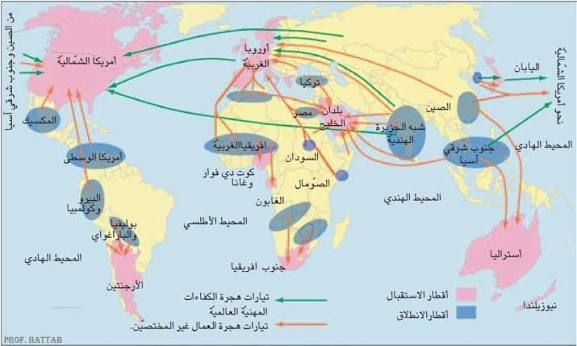
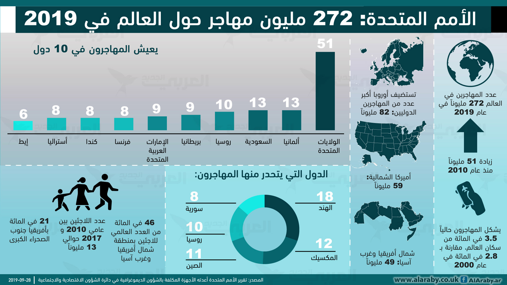
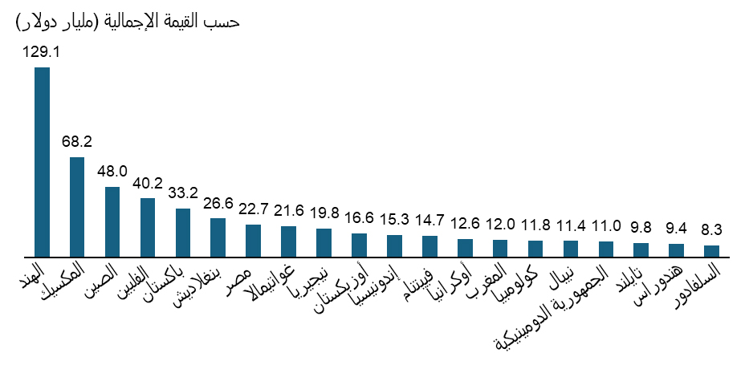
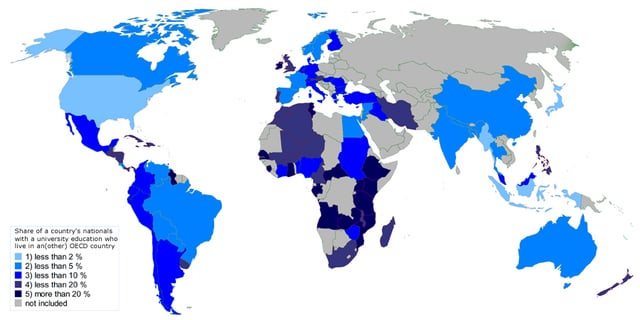
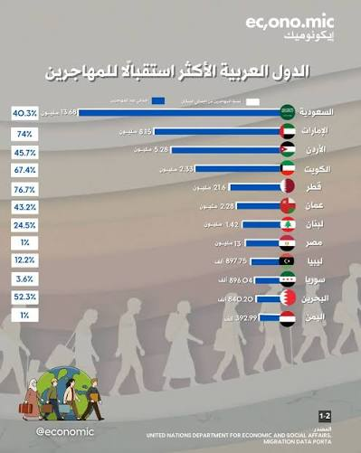
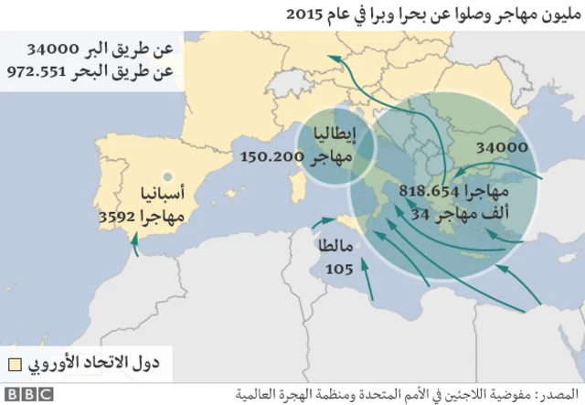

الحركية المجالية للسكان: هجرة العمل الدولية
مقدمة
يشهد عالمنا المعاصر تنامياً لظاهرة الهجرة بمختلف أصنافها، فتنوعت الأدفاق الهجرية واختلفت أسبابها وانعكاساتها، ومن أهمها هجرة العمال إلى الخارج. وقد ارتفع عدد المهاجرين الدوليين من 84 مليون مهاجر سنة 1970 إلى قرابة 281 مليون سنة 2020، أي ما يعادل 3.6% من سكان العالم. ويُقصد بالحركية المجالية للسكان انتقالهم من مكان إلى آخر بشكل دائم أو مؤقت، بحثاً عن ظروف عيش أفضل أو فراراً من ظروف قاهرة.
ما هي أهم تيارات الهجرة العمالية الدولية؟ وما هي دوافعها؟ وفيم تتمثل انعكاساتها على بلدان الانطلاق وبلدان الاستقبال؟
I الهجرة العمالية الدولية: تطورها وأصنافها ودوافعها وتياراتها
1. تطور عدد العمال المهاجرين
شهد عدد العمال المهاجرين نمواً سريعاً، فقد ارتفع من 30 مليون سنة 1970 إلى 169 مليون سنة 2019، أي أنه تضاعف حوالي 6 مرات خلال 49 سنة. وقد مثّل هؤلاء العمال سنة 2019 أكثر من 3/5 إجمالي المهاجرين (62%)، 58% منهم ذكور و42% إناث. وفي سنة 2020 بلغ عدد المهاجرين الدوليين قرابة 281 مليون مهاجر مقابل 84 مليون سنة 1970.
2. أصناف الهجرة العمالية الدولية ودوافعها
أ. أصناف الهجرة العمالية
تُصنَّف هجرة العمال إلى الخارج إلى صنفين رئيسيين:
- هجرة العمال غير المختصين: وهي هجرة اليد العاملة غير المؤهلة التي تتجه غالباً نحو قطاعات البناء والأشغال العامة والفلاحة والخدمات المنزلية.
- هجرة الأدمغة: وهي هجرة أصحاب الاختصاص في مجالات علمية ومهنية عالية (أطباء، مهندسون، باحثون، أساتذة جامعيون). ويمكن أن تكون هذه الهجرة وقتية أو نهائية، قانونية أو غير قانونية.
ب. دوافع هجرة العمال إلى الخارج
من أبرز دوافع هجرة العمال إلى الخارج:
- تفاقم البطالة وانعدام فرص العمل بدول الانطلاق.
- انتشار الفقر وتدني مستويات المعيشة.
- حاجة دول الاستقبال إلى اليد العاملة في قطاعات معينة.
- رغبة العمال في تحسين ظروف عيشهم من خلال الاستفادة من الفوارق في الأجور بين بلدان الانطلاق وبلدان الاستقبال.
3. تيارات هجرات العمل في العالم
أ. تيارات هجرة العمال غير المختصين
| بلدان الانطلاق | بلدان الاستقبال |
|---|---|
| البلدان النامية: آسيا الجنوبية (خاصة الهند) – شرق آسيا (خاصة الصين) – جنوب شرقي آسيا – أمريكا اللاتينية (خاصة المكسيك) – إفريقيا. | البلدان النامية: دول الخليج النفطية – جنوب إفريقيا – الكوت دي فوار وغانا – الأرجنتين. البلدان المتقدمة: أمريكا الشمالية (خاصة الولايات المتحدة الأمريكية) – أوروبا الغربية – أستراليا – اليابان. |
ب. تيارات هجرة الأدمغة
| بلدان الانطلاق | بلدان الاستقبال |
|---|---|
| أقطار آسيا الجنوبية والشرقية (الهند – الصين – كوريا الجنوبية…) – بعض أقطار إفريقيا ومنها الدول العربية – أوروبا الشرقية – روسيا. | البلدان المتقدمة بأمريكا الشمالية خاصة الولايات المتحدة الأمريكية وأوروبا الغربية. |
عموماً تستقطب الدول الغنية خاصة بأمريكا الشمالية وأوروبا الغربية ودول الخليج العربي أكثر من 2/3 إجمالي العمال المهاجرين في العالم (67%).
II انعكاسات الهجرة العمالية الدولية
يمكن تصنيف انعكاسات الهجرة العمالية الدولية إلى انعكاسات إيجابية وأخرى سلبية، سواء على بلدان الانطلاق أو على بلدان الاستقبال.
1. الانعكاسات على بلدان الانطلاق
أ. ديمغرافياً
تراجع نسبة الفئات الشابة واختلال التركيبة الديمغرافية بسبب خروج الفئات النشيطة في سن العمل إلى الخارج.
ب. اجتماعياً
الحد من البطالة والفقر بين العائلات بفضل تحويلات المهاجرين، بينما تتسبب الهجرة في تفكك الروابط الأسرية بسبب غياب أحد أفراد الأسرة لفترات طويلة.
ج. اقتصادياً
الإيجابيات:
- تساهم في التخفيف من الضغط على سوق الشغل.
- تمكّن من نقل التكنولوجيا وتدفق العملة الصعبة بفضل تحويلات المهاجرين، التي بلغت سنة 2021 حوالي 773 مليار دولار، وتحتل الهند المرتبة الأولى (89 مليار دولار) تليها المكسيك ثم الصين.
السلبيات:
- خسارة الأدمغة وجزء هام من الناشطين، مما يؤثر سلباً على التنمية في بلدان الانطلاق.
2. الانعكاسات على بلدان الاستقبال
أ. ديمغرافياً
تساهم الهجرة في الرفع من نسبة النمو الطبيعي والحد من التهرم السكاني، خاصة في الدول المتقدمة التي تعاني من انخفاض نسبة الولادات.
ب. اجتماعياً
انتشار المشاكل الناجمة عن الميز العنصري وارتفاع معدل البطالة لدى المهاجرين غير القانونيين، مما يخلق توترات اجتماعية في بعض بلدان الاستقبال.
ج. اقتصادياً
الإيجابيات:
- الاستفادة من تدفق يد عاملة بأجور منخفضة في قطاعات معينة.
- الاستفادة من هجرة الأدمغة والكفاءات العلمية العالية.
السلبيات:
- تتسبب في تزايد الضغط على سوق الشغل.
- خسارة الأموال التي يحولها المهاجرون إلى أوطانهم، إذ تفقد الولايات المتحدة الأمريكية حوالي 75 مليار دولار سنة 2021، والعربية السعودية فقدت 41 مليار دولار.
خاتمة
تساهم الهجرة العمالية الدولية في التخفيف من حدة التباينات الاجتماعية والديمغرافية بين بلدان العالم، إلا أنها تطرح عديد السلبيات على بلدان الانطلاق وبلدان الاستقبال على حد سواء، مما يستوجب وضع سياسات هجرة عقلانية تحقق التوازن بين مصالح جميع الأطراف.
📖 تعريفات
🌍 دول ومناطق
- الهند: من أهم بلدان انطلاق هجرة العمال غير المختصين وهجرة الأدمغة نحو دول الخليج والولايات المتحدة وأوروبا الغربية، وهي تحتل المرتبة الأولى عالمياً في تحويلات المهاجرين (89 مليار دولار سنة 2021).
- الصين: من أهم بلدان انطلاق هجرة العمال نحو باقي أقطار العالم، وهي من أكبر الدول المستقبلة لتحويلات المهاجرين.
- المكسيك: من أهم بلدان انطلاق هجرة العمال غير المختصين نحو الولايات المتحدة الأمريكية، وتحتل مراتب متقدمة في تحويلات المهاجرين.
- الولايات المتحدة الأمريكية: أهم بلد استقبال للمهاجرين العمال في العالم، وتستقطب هجرة الأدمغة من مختلف القارات، لكنها تفقد حوالي 75 مليار دولار سنة 2021 بسبب تحويلات المهاجرين إلى أوطانهم.
- أوروبا الغربية: من أهم مناطق استقبال المهاجرين العمال خاصة من إفريقيا وآسيا وأوروبا الشرقية، وتستفيد من هجرة الأدمغة في قطاعات متعددة.
- دول الخليج النفطية: من أهم مناطق استقبال العمال غير المختصين من آسيا وإفريقيا، وتستقطب أعداداً كبيرة من اليد العاملة في قطاعات البناء والخدمات والنفط.
- العربية السعودية: من أكبر الدول المستقبلة للعمال المهاجرين في منطقة الخليج، وقد فقدت حوالي 41 مليار دولار سنة 2021 بسبب تحويلات المهاجرين.
- أستراليا: بلد متقدم يستقبل المهاجرين العمال خاصة من آسيا، ويعتمد على الهجرة لتغطية حاجياته من اليد العاملة.
- اليابان: من البلدان المتقدمة المستقبلة للعمال المهاجرين رغم سياساتها المتحفظة في مجال الهجرة.
- جنوب إفريقيا: من أهم بلدان الاستقبال في إفريقيا للعمال المهاجرين من الدول الإفريقية المجاورة.
- آسيا الجنوبية: من أهم مناطق انطلاق هجرة العمال في العالم، خاصة الهند وباكستان وبنغلاديش.
- أمريكا اللاتينية: من مناطق انطلاق هجرة العمال نحو الولايات المتحدة الأمريكية، ومن أهم بلدانها المكسيك.
- أوروبا الشرقية: من مناطق انطلاق هجرة الأدمغة نحو أوروبا الغربية والولايات المتحدة الأمريكية.
📌 أخرى
- الهجرة العمالية: انتقال العمال من بلد إلى آخر بحثاً عن فرص عمل وظروف عيش أفضل، وتشمل هجرة العمال غير المختصين وهجرة الأدمغة.
- هجرة الأدمغة: هجرة أصحاب الاختصاص في مجالات علمية ومهنية عالية (أطباء، مهندسون، باحثون) من بلدانهم الأصلية نحو البلدان المتقدمة، ويمكن أن تكون وقتية أو نهائية، قانونية أو غير قانونية.
- هجرة العمال غير المختصين: هجرة اليد العاملة غير المؤهلة التي تتجه غالباً نحو قطاعات البناء والأشغال العامة والفلاحة والخدمات المنزلية.
- تحويلات المهاجرين: الأموال التي يحولها المهاجرون إلى بلدانهم الأصلية، وقد بلغت سنة 2021 حوالي 773 مليار دولار على المستوى العالمي، وتحتل الهند المرتبة الأولى (89 مليار دولار) تليها المكسيك ثم الصين.
- الأدفاق الهجرية: تيارات انتقال السكان من مناطق إلى أخرى، وتختلف حسب أصناف المهاجرين وأسباب الهجرة وظروف بلدان الانطلاق والاستقبال.
- المهاجرون الدوليون: الأشخاص الذين ينتقلون من بلد إلى آخر للإقامة فيه بشكل دائم أو مؤقت، وبلغ عددهم قرابة 281 مليون سنة 2020 مقابل 84 مليون سنة 1970.
- الميز العنصري: التمييز ضد المهاجرين في بلدان الاستقبال بسبب أصولهم العرقية أو الثقافية، مما يخلق مشاكل اجتماعية وتوترات.
- البطالة: انعدام فرص العمل، وهي من أبرز دوافع هجرة العمال إلى الخارج.
- الفقر: انخفاض مستوى المعيشة وعدم القدرة على تلبية الحاجيات الأساسية، وهو من أهم دوافع الهجرة.
📅 سنوات وفترات
- 1970: بلغ عدد المهاجرين الدوليين 84 مليون وعدد العمال المهاجرين 30 مليون.
- 2019: بلغ عدد العمال المهاجرين 169 مليون، أي ما يعادل 62% من إجمالي المهاجرين.
- 2020: بلغ عدد المهاجرين الدوليين قرابة 281 مليون مهاجر.
- 2021: بلغت تحويلات المهاجرين حوالي 773 مليار دولار، واحتلت الهند المرتبة الأولى (89 مليار دولار).
🗺️ خرائط ومعطيات مصورة





